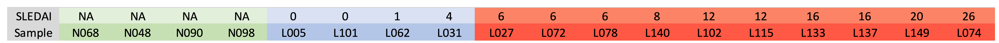

Introduction
Syetem Lupus Erythematosus is a complex autoimmune disease and its cause is unclear. Given the autoimmune nature of SLE and the newly-recognized role of intron retention (IR) played in global gene regulation, we studied the global gene expression and intron retention pattern of lupus patients. The top principal component of global IR pattern provide insight into lupus evaluation and diagnosis, while the dominant genes in the component may serve as biomarkers and show potential for drug design or treatment of SLE.



Data Introduction
GE: 18 Samples: 4 Controls (healthy), 4 Inactive, 10 Active ; 26372 Genes
IR: 17 Samples; 7650 genes with IRI: GE>1, 0 Intron Retention Index (IRI) = intron reads / exon reads